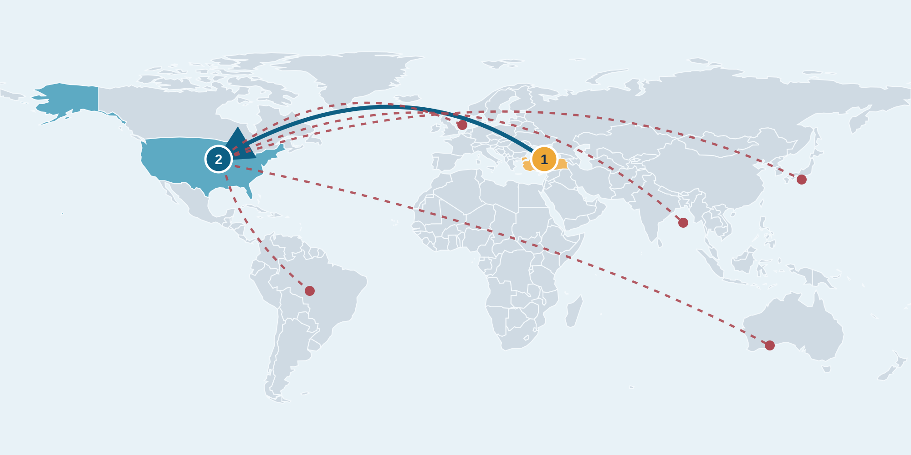

2027—2031 · MONTHLY PLANNING SCENARIO
From Turkey to the world,
one month at a time.
A practical sequence for product, management and rights-cleared lab partnerships. Select a year to see monthly team, customer, revenue and cost targets.

BASE FORECAST + DOWNSIDE CASE
Numbers over time.
Switch between monthly and annual views. Solid lines show the existing plan; dashed lines show an illustrative risk case.
WHAT CHANGES IN THE RISK CASE
Working assumptions
- 20% fewer paying firms and companies each month.
- Marketplace commission receipts fall 25%.
- Lab licensing receipts arrive three months late; amounts beyond 2031 fall outside this chart.
- Active team and fixed operating budgets remain in place. Variable delivery and royalty costs adjust with actual receipts.
RESILIENCE CAPACITY
Cash and people on standby
Reserve 1 / 2 / 3 / 4 / 6 on-call full-time-equivalent people in 2027–2031. The risk case adds a $1,500 monthly retainer per reserved person to expenses. These are available capacity, not extra active employees.
Target cash buffer: the greater of $150,000 or current and following two months of risk-case expenses. Beyond 2031, the last modeled month's expense is repeated for this target. The chart compares it with a $150,000 starter reserve; any gap needs more cash set aside. Ring-fenced cash is not an expense until spent.
ILLUSTRATIVE CRISIS COSTS
One-time response budgets
These are planning estimates, not vendor quotes or predictions. Each event enters the risk-case expenses and operating result in its month. No debt, tax, financing or cash-balance forecast is implied.
FIVE-YEAR TIMELINE
Choose a year.
Year 1 is Turkey product validation. Year 2 tests a US presence. Years 3–5 expand selectively across jurisdictions.
| Month | Product & technology | Management & market | Labs & licensing | Team | Customers firms / companies | Lab sales | Revenue | Expenses |
|---|
Team and customer figures are month-end targets. Lab sales are modeled license receipts from prospective, approved buyers. USD figures are before tax and financing; expenses include product, commercial and administrative budgets, delivery, lab share, review and marketplace operations.
How to read the sheet
Technical and management actions are a proposed sequence. A delayed legal or quality gate should move the related launch or sale, not be treated as completed work.
Lab work means prospective legal NLP, evaluation and academic research collaborations. Only owned, synthetic or otherwise rights-cleared assets could be licensed after legal review.
Financial values reconcile to the annual targets on the main site. Monthly staffing, transactions and license timing are explicit modeling assumptions.